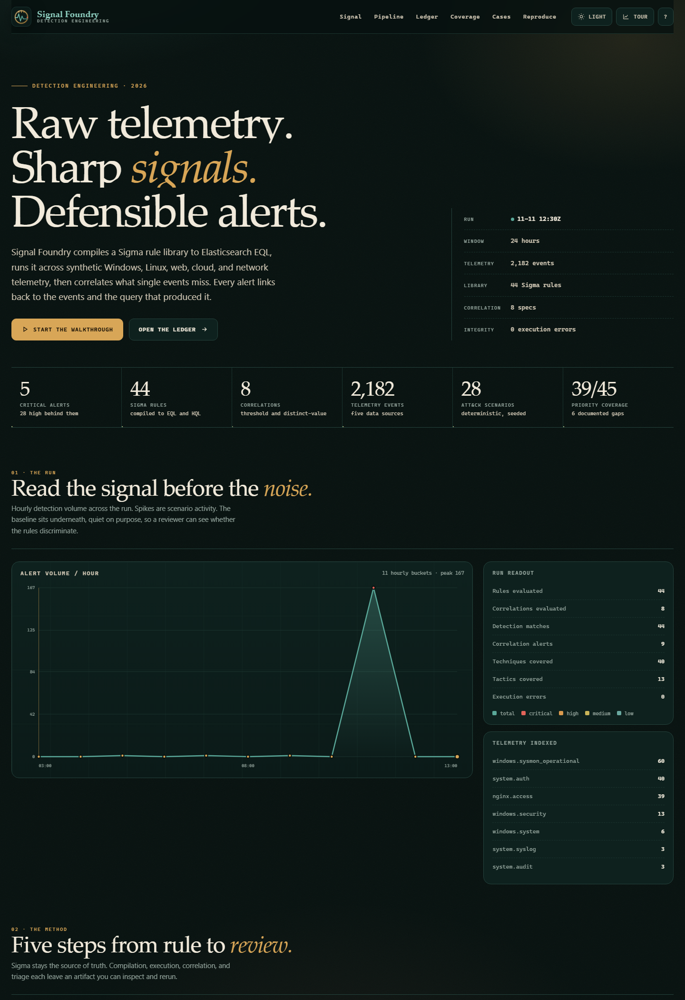

Motion
The chart scans continuously and replays its bars every 8 seconds. The coverage gauge waves, the pipeline dot travels, and the case tabs pulse. Scroll to The run, Coverage, Method, or Cases.
Signal Foundry / UI review
Design pass: c487788
The static cover keeps the same case-file identity on purpose. The last pass changed motion, night hierarchy, type rendering, interaction, accessibility, and load behavior, not the brand. Use the controls below to jump the live dashboard and trigger each change.
The chart scans continuously and replays its bars every 8 seconds. The coverage gauge waves, the pipeline dot travels, and the case tabs pulse. Scroll to The run, Coverage, Method, or Cases.
Toggle the theme. The run ticket becomes a paper receipt on the dark desk. Signal cyan appears in the chart scan, crosshair, peak, live dots, and rail waveform. Night panels lift off the page.
DM Mono now uses only real 400/500 weights, so the ticket and labels are crisp. Numbers are tabular. Primary buttons are 48px. Mobile inputs are 16px and filters are 32px.
Select a watch floor row for the fixed evidence inspector. Press Ctrl K for the palette. Open a case for the focus trap and scroll lock. The guided tour avoids the target it describes.
The chart builds when it is near the viewport. The watch floor renders on idle or first reveal. Evidence drawers are built on first open. The initial DOM is much smaller.
Lighthouse: 100 accessibility, 100 best practices, 100 SEO, 88 performance. 44 pytest tests. CDP checks cover the lazy drawer, EQL tab, palette focus, case focus trap, theme, and gaps.


The design system is in docs/design.md. The repo-scoped skills live in `.opencode/skills` in the repository. Open the dashboard directly.